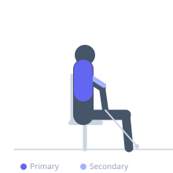

Exercise guide / Seated Cable Row — Wide Overhand Grip
Seated Cable Row — Wide Overhand Grip
A seated cable row performed with a wide overhand grip using a straight bar. This grip orientation shifts the loading emphasis from the lats to the middle and upper traps, rhomboids, and rear deltoids compared to a close neutral-grip row, targeting the mid-scapular muscles more directly.
Primary muscles
trapezius middle
rhomboids
posterior deltoid
Secondary muscles
latissimus dorsi
trapezius lower
biceps brachii long head
Stabilizers
transverse abdominis
erector spinae
brachialis
Equipment
Cable Machine (Low Pulley)


Starting position
- Sit at a cable row station with feet on the foot rests and knees slightly bent. Hold a wide straight bar with an overhand grip.
Setup
- Attach a straight bar to the low cable pulley. Sit down, place feet on the foot rests, and grip the bar wide with an overhand grip.
Steps
- Step 1: Keep the torso upright and brace the core throughout.
- Step 2: Pull the bar toward the upper abdomen, driving the elbows out wide to the sides.
- Step 3: Squeeze the shoulder blades together at the peak of the row.
- Step 4: Return under control to full arm extension.
Coaching cues
- Elbows out wide
- Squeeze the shoulder blades at the top
Breathing
- Exhale on the pull. Inhale on the return.
Range of motion
- Full arm extension at the front. Bar pulled to the upper abdomen with shoulder blades retracted at the back.
Tempo
- 2-1-2-0
Common mistakes
- Using momentum by swinging the torso
- Not squeezing the shoulder blades at the top
Safety
- A wider grip means the elbows flare out — this is intentional for mid-trap targeting
Training
- strength: 3–8 reps
- hypertrophy: 8–15 reps
- strength: 3–5 sets
- hypertrophy: 3–4 sets
- Rest: {'strength': 180, 'hypertrophy': 90}